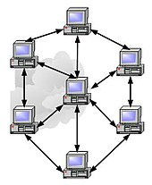

Dans les années 1960, les premiers réseaux informatiques étaient de portée limitée (quelques dizaines de mètres avec par exemple l'HP-IB, l'HP-IL, etc.)
et servaient à la communication entre micro-ordinateurs et des instruments de mesure ou des périphériques (imprimantes, table traçante, etc.).
Les réseaux informatiques filaires entre sites distants apparaissent dans les années 1970 : IBM et DEC créent les architectures SNA et DECnet,
avec la numérisation du réseau de téléphone d'AT&T (voir Réseau téléphonique commuté)2
et ses connexions dédiées à moyen débit. Ils sont précédés par le réseau Cyclades français,
poussé par la CII et sa Distributed System Architecture,
basés sur le Datagramme.
Voici une liste non exhaustive des protocoles réseaux qui existent à ce jour (par type de réseau) :
